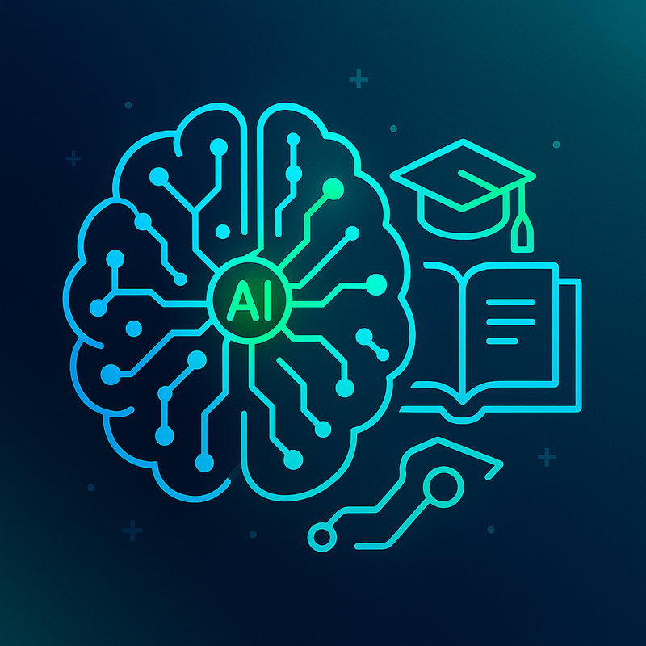

AI in 2025: What Every Business Owner Should Be Preparing For
The pace of innovation in artificial intelligence is accelerating, and the businesses that thrive will be those that anticipate rather than react. Looking ahead to 2025, AI won’t just be a competitive advantage – it will be the cost of entry. Failing to prepare could mean falling behind in productivity, customer experience and market relevance.
Expect AI‑powered assistants to become more conversational and proactive, handling complex requests with ease. Generative AI will create content, designs and code at the click of a button, while predictive models will forecast demand, highlight risks and personalise marketing at scale. These advancements will democratise capabilities once reserved for large enterprises, putting sophisticated tools into the hands of every manager.
To prepare your business, focus on two pillars: data readiness and talent development. Ensure your data infrastructure is secure, accessible and structured in a way that AI models can utilise. Cultivate a culture of experimentation and invest in training your team to work with AI‑driven tools. Most importantly, choose technology partners who prioritise transparency, ethics and long‑term support so you can adopt innovations responsibly.
Navigating the AI landscape can be challenging, especially as new technologies emerge. Our experts stay ahead of trends and help clients prepare strategically for what’s coming. Book a free strategy call to discuss how to future‑proof your business for AI in 2025 and beyond.
Automation Steps & Logic
Below is a high-level overview of the steps involved in automating this process:
- Identify the Process: Map out the exact workflow that needs automation, including inputs, outputs and decision points.
- Select the Right Tools & Platforms: Choose AI agents, RPA bots or integration tools based on complexity and scalability needs.
- Design & Prototype: Build a proof of concept or prototype to validate the logic and gather stakeholder feedback.
- Implement & Integrate: Deploy the solution and integrate with existing systems, ensuring data flows seamlessly between components.
- Monitor & Optimise: Continuously track performance, gather insights and iterate on the automation to improve efficiency.
Recommended Bots & Agents
Here are examples of intelligent agents that can assist with this use case:
- Conversational AI Bots: Handle customer queries, onboarding or support through chat or voice interfaces.
- RPA Bots: Automate rule-based, repetitive tasks such as data entry, invoicing and report generation.
- Data Extraction Bots: Collect and cleanse information from documents, emails or web pages for downstream processing.
- Scheduling & Coordination Agents: Automate meeting bookings, reminders and coordination across teams.
- Integration Agents: Seamlessly connect your CRM, ERP, marketing and communication tools through APIs.
 Back to Blog
Back to Blog